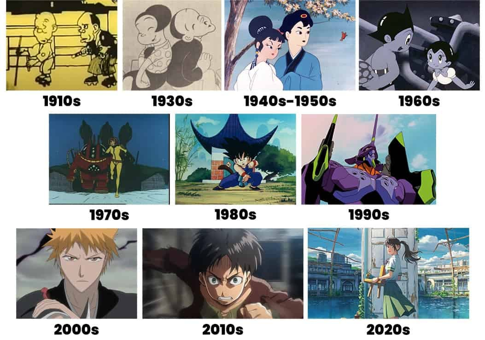

Welcome To My Website
We're thrilled to have you here. Whether you're exploring our latest offerings, looking for expert advice, or just browsing, we're here to make your experience smooth, informative, and enjoyable.
Take a look around and let us know if there's anything we can help you with.
Thank you for visiting - we're excited to be part of your journey!
🌸 What is Anime?
Anime is a style of animation that originated in Japan and has become a worldwide cultural phenomenon. While "anime" simply means "animation" in Japanese, outside Japan it refers specifically to Japanese animated shows, movies, and web series.
🗾 A Brief History
Early beginnings (1910s–1960s):
Japan’s animation industry began in the early 20th century, but it gained momentum after World War II.
Astro Boy (1963) by Osamu Tezuka is often credited as the first modern anime TV series.
1980s–1990s:
Anime exploded in popularity in Japan and abroad with titles like Dragon Ball, Mobile Suit Gundam, Sailor Moon, and Akira.
2000s–Present:
With the rise of streaming platforms and global fanbases, anime has become mainstream entertainment worldwide.

ğŸ Common Genres
Anime spans a huge range of genres, including:
Shonen (action, adventure, aimed at young males): Naruto, One Piece, My Hero Academia
Shojo (romance, friendship, aimed at young females): Sailor Moon, Fruits Basket
Seinen (more mature content for adults): Attack on Titan, Tokyo Ghoul, Berserk
Isekai (characters transported to another world): Re:Zero, Sword Art Online
Slice of Life, Mecha, Fantasy, Horror, Comedy, and more
🌠Global Impact
Anime has had a massive cultural influence:
Inspired art, fashion, and music
Influenced global animation and storytelling
Sparked fan communities, cosplay, conventions, and even academic study
Japan’s anime industry is now worth billions of dollars
💡 Fun Fact
Anime often adapts content from manga, which are Japanese comic books or graphic novels. In many cases, the manga is released first, followed by the anime adaptation.